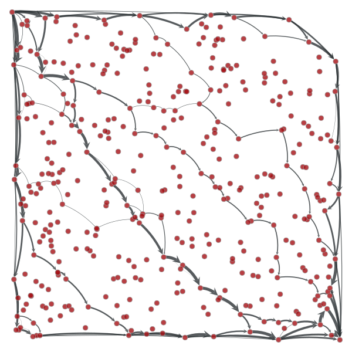
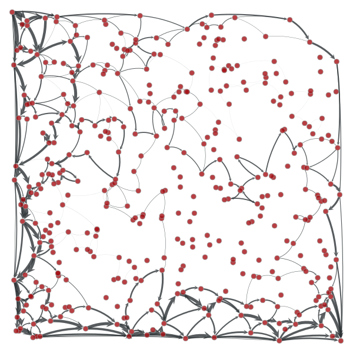
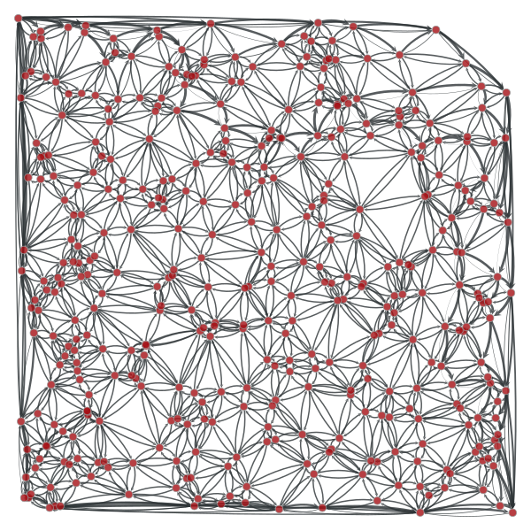
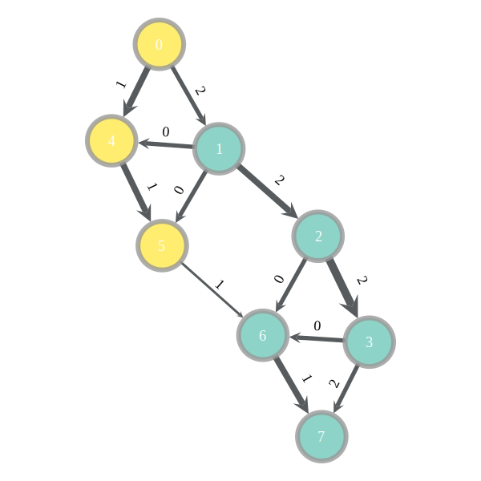
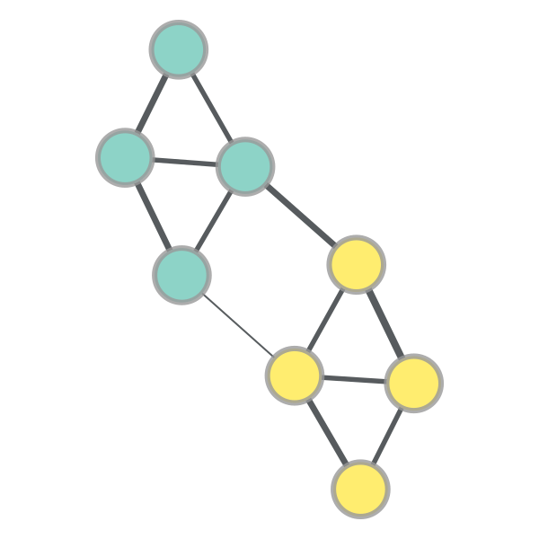

graph_tool.flow - Maximum flow algorithms¶
Summary¶
edmonds_karp_max_flow |
Calculate maximum flow on the graph with the Edmonds-Karp algorithm. |
push_relabel_max_flow |
Calculate maximum flow on the graph with the push-relabel algorithm. |
boykov_kolmogorov_max_flow |
Calculate maximum flow on the graph with the Boykov-Kolmogorov algorithm. |
min_st_cut |
Get the minimum source-target cut, given the residual capacity of the edges. |
min_cut |
Get the minimum cut of an undirected graph, given the weight of the edges. |
Contents¶
The following network will be used as an example throughout the documentation.
from numpy.random import seed, random
from scipy.linalg import norm
gt.seed_rng(42)
seed(42)
points = random((400, 2))
points[0] = [0, 0]
points[1] = [1, 1]
g, pos = gt.triangulation(points, type="delaunay")
g.set_directed(True)
edges = list(g.edges())
# reciprocate edges
for e in edges:
g.add_edge(e.target(), e.source())
# The capacity will be defined as the inverse euclidean distance
cap = g.new_edge_property("double")
for e in g.edges():
cap[e] = min(1.0 / norm(pos[e.target()].a - pos[e.source()].a), 10)
g.edge_properties["cap"] = cap
g.vertex_properties["pos"] = pos
g.save("flow-example.xml.gz")
gt.graph_draw(g, pos=pos, edge_pen_width=gt.prop_to_size(cap, mi=0, ma=3, power=1),
output="flow-example.pdf")
Example network used in the documentation below. The edge capacities are represented by the edge width.
-
graph_tool.flow.edmonds_karp_max_flow(g, source, target, capacity, residual=None)[source]¶ Calculate maximum flow on the graph with the Edmonds-Karp algorithm.
Parameters: g :
GraphGraph to be used.
source : Vertex
The source vertex.
target : Vertex
The target (or “sink”) vertex.
capacity :
PropertyMapEdge property map with the edge capacities.
residual :
PropertyMap(optional, default: none)Edge property map where the residuals should be stored.
Returns: residual :
PropertyMapEdge property map with the residual capacities (capacity - flow).
Notes
The algorithm is due to [edmonds-theoretical-1972], though we are using the variation called the “labeling algorithm” described in [ravindra-network-1993].
This algorithm provides a very simple and easy to implement solution to the maximum flow problem. However, there are several reasons why this algorithm is not as good as the push_relabel_max_flow() or the boykov_kolmogorov_max_flow() algorithm.
- In the non-integer capacity case, the time complexity is \(O(VE^2)\) which is worse than the time complexity of the push-relabel algorithm \(O(V^2E^{1/2})\) for all but the sparsest of graphs.
- In the integer capacity case, if the capacity bound U is very large then the algorithm will take a long time.
The time complexity is \(O(VE^2)\) in the general case or \(O(VEU)\) if capacity values are integers bounded by some constant \(U\).
References
[boost-edmonds-karp] http://www.boost.org/libs/graph/doc/edmonds_karp_max_flow.html [edmonds-theoretical-1972] (1, 2) Jack Edmonds and Richard M. Karp, “Theoretical improvements in the algorithmic efficiency for network flow problems. Journal of the ACM”, 19:248-264, 1972 DOI: 10.1145/321694.321699 [ravindra-network-1993] (1, 2) Ravindra K. Ahuja and Thomas L. Magnanti and James B. Orlin,”Network Flows: Theory, Algorithms, and Applications”. Prentice Hall, 1993. Examples
>>> g = gt.load_graph("flow-example.xml.gz") >>> cap = g.edge_properties["cap"] >>> src, tgt = g.vertex(0), g.vertex(1) >>> res = gt.edmonds_karp_max_flow(g, src, tgt, cap) >>> res.a = cap.a - res.a # the actual flow >>> max_flow = sum(res[e] for e in tgt.in_edges()) >>> print(max_flow) 44.89059578411614 >>> pos = g.vertex_properties["pos"] >>> gt.graph_draw(g, pos=pos, edge_pen_width=gt.prop_to_size(res, mi=0, ma=5, power=1), output="example-edmonds-karp.pdf") <...>
Edge flows obtained with the Edmonds-Karp algorithm. The source and target are on the lower left and upper right corners, respectively. The edge flows are represented by the edge width.
-
graph_tool.flow.push_relabel_max_flow(g, source, target, capacity, residual=None)[source]¶ Calculate maximum flow on the graph with the push-relabel algorithm.
Parameters: g :
GraphGraph to be used.
source : Vertex
The source vertex.
target : Vertex
The target (or “sink”) vertex.
capacity :
PropertyMapEdge property map with the edge capacities.
residual :
PropertyMap(optional, default: none)Edge property map where the residuals should be stored.
Returns: residual :
PropertyMapEdge property map with the residual capacities (capacity - flow).
Notes
The algorithm is defined in [goldberg-new-1985]. The complexity is \(O(V^3)\).
References
[boost-push-relabel] http://www.boost.org/libs/graph/doc/push_relabel_max_flow.html [goldberg-new-1985] (1, 2) A. V. Goldberg, “A New Max-Flow Algorithm”, MIT Tehnical report MIT/LCS/TM-291, 1985. Examples
>>> g = gt.load_graph("flow-example.xml.gz") >>> cap = g.edge_properties["cap"] >>> src, tgt = g.vertex(0), g.vertex(1) >>> res = gt.push_relabel_max_flow(g, src, tgt, cap) >>> res.a = cap.a - res.a # the actual flow >>> max_flow = sum(res[e] for e in tgt.in_edges()) >>> print(max_flow) 44.89059578411614 >>> pos = g.vertex_properties["pos"] >>> gt.graph_draw(g, pos=pos, edge_pen_width=gt.prop_to_size(res, mi=0, ma=5, power=1), output="example-push-relabel.pdf") <...>
Edge flows obtained with the push-relabel algorithm. The source and target are on the lower left and upper right corners, respectively. The edge flows are represented by the edge width.
-
graph_tool.flow.boykov_kolmogorov_max_flow(g, source, target, capacity, residual=None)[source]¶ Calculate maximum flow on the graph with the Boykov-Kolmogorov algorithm.
Parameters: g :
GraphGraph to be used.
source : Vertex
The source vertex.
target : Vertex
The target (or “sink”) vertex.
capacity :
PropertyMapEdge property map with the edge capacities.
residual :
PropertyMap(optional, default: none)Edge property map where the residuals should be stored.
Returns: residual :
PropertyMapEdge property map with the residual capacities (capacity - flow).
Notes
The algorithm is defined in [kolmogorov-graph-2003] and [boykov-experimental-2004]. The worst case complexity is \(O(EV^2|C|)\), where \(|C|\) is the minimum cut (but typically performs much better).
For a more detailed description, see [boost-kolmogorov].
References
[boost-kolmogorov] (1, 2) http://www.boost.org/libs/graph/doc/boykov_kolmogorov_max_flow.html [kolmogorov-graph-2003] (1, 2) Vladimir Kolmogorov, “Graph Based Algorithms for Scene Reconstruction from Two or More Views”, PhD thesis, Cornell University, September 2003. [boykov-experimental-2004] (1, 2) Yuri Boykov and Vladimir Kolmogorov, “An Experimental Comparison of Min-Cut/Max-Flow Algorithms for Energy Minimization in Vision”, IEEE Transactions on Pattern Analysis and Machine Intelligence, vol. 26, no. 9, pp. 1124-1137, Sept. 2004. DOI: 10.1109/TPAMI.2004.60 Examples
>>> g = gt.load_graph("flow-example.xml.gz") >>> cap = g.edge_properties["cap"] >>> src, tgt = g.vertex(0), g.vertex(1) >>> res = gt.boykov_kolmogorov_max_flow(g, src, tgt, cap) >>> res.a = cap.a - res.a # the actual flow >>> max_flow = sum(res[e] for e in tgt.in_edges()) >>> print(max_flow) 44.89059578411614 >>> pos = g.vertex_properties["pos"] >>> gt.graph_draw(g, pos=pos, edge_pen_width=gt.prop_to_size(res, mi=0, ma=3, power=1), output="example-kolmogorov.pdf") <...>
Edge flows obtained with the Boykov-Kolmogorov algorithm. The source and target are on the lower left and upper right corners, respectively. The edge flows are represented by the edge width.
-
graph_tool.flow.min_st_cut(g, source, capacity, residual)[source]¶ Get the minimum source-target cut, given the residual capacity of the edges.
Parameters: g :
GraphGraph to be used.
source : Vertex
The source vertex.
capacity :
PropertyMapEdge property map with the edge capacities.
residual :
PropertyMapEdge property map with the residual capacities (capacity - flow).
Returns: partition :
PropertyMapBoolean-valued vertex property map with the cut partition. Vertices with value True belong to the source side of the cut.
Notes
The source-side of the cut set is obtained by following all vertices which are reachable from the source in the residual graph (i.e. via edges with nonzero residual capacity, and reversed edges with nonzero flow).
This algorithm runs in \(O(V+E)\) time.
References
[max-flow-min-cut] http://en.wikipedia.org/wiki/Max-flow_min-cut_theorem Examples
>>> g = gt.load_graph("mincut-st-example.xml.gz") >>> cap = g.edge_properties["weight"] >>> src, tgt = g.vertex(0), g.vertex(7) >>> res = gt.boykov_kolmogorov_max_flow(g, src, tgt, cap) >>> part = gt.min_st_cut(g, src, cap, res) >>> mc = sum([cap[e] - res[e] for e in g.edges() if part[e.source()] != part[e.target()]]) >>> print(mc) 3 >>> pos = g.vertex_properties["pos"] >>> res.a = cap.a - res.a # the actual flow >>> gt.graph_draw(g, pos=pos, edge_pen_width=gt.prop_to_size(cap, mi=3, ma=10, power=1), ... edge_text=res, vertex_fill_color=part, vertex_text=g.vertex_index, ... vertex_font_size=18, edge_font_size=18, output="example-min-st-cut.pdf") <...>
Edge flows obtained with the Boykov-Kolmogorov algorithm. The source and target are labeled
0and7, respectively. The edge capacities are represented by the edge width, and the maximum flow by the edge labels. Vertices of the same color are on the same side the minimum cut.
-
graph_tool.flow.min_cut(g, weight)[source]¶ Get the minimum cut of an undirected graph, given the weight of the edges.
Parameters: g :
GraphGraph to be used.
weight :
PropertyMapEdge property map with the edge weights.
Returns: min_cut : float
The value of the minimum cut.
partition :
PropertyMapBoolean-valued vertex property map with the cut partition.
Notes
The algorithm is defined in [stoer_simple_1997].
The time complexity is \(O(VE + V^2 \log V)\).
References
[stoer_simple_1997] (1, 2) Stoer, Mechthild and Frank Wagner, “A simple min-cut algorithm”. Journal of the ACM 44 (4), 585-591, 1997. DOI: 10.1145/263867.263872 Examples
>>> g = gt.load_graph("mincut-example.xml.gz") >>> weight = g.edge_properties["weight"] >>> mc, part = gt.min_cut(g, weight) >>> print(mc) 4.0 >>> pos = g.vertex_properties["pos"] >>> gt.graph_draw(g, pos=pos, edge_pen_width=weight, vertex_fill_color=part, ... output="example-min-cut.pdf") <...>
Vertices of the same color are on the same side of a minimum cut. The edge weights are represented by the edge width.